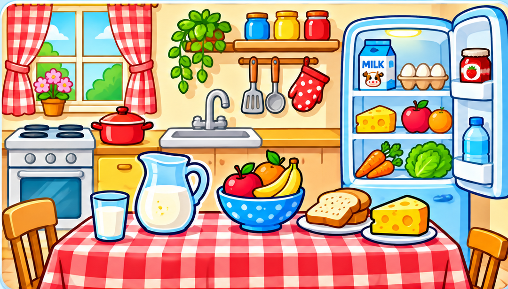

Linguafly Quest ✦
MISIÓN 002 · THE FUNNY KITCHEN
1 Explorar2 Practicar · 20 retos3 ¡Lo lograste!
📖 0/12
⭐ 0

✨ Palabras que vamos descubriendo
Pulsa sobre los dibujos de la cocina
RETO 1 DE 20
¡Vamos a jugar!
🏆 ¡Cocina completada!
Has descubierto los objetos y alimentos de la cocina. ¡Tu Diccionario Ancestral tiene nuevas palabras!
📖 🥛 🍎
¡Misión completada!
20 retos superados · 0 estrellas